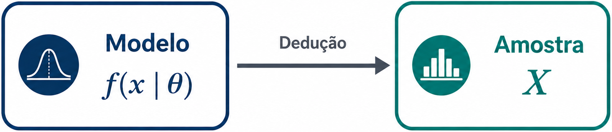
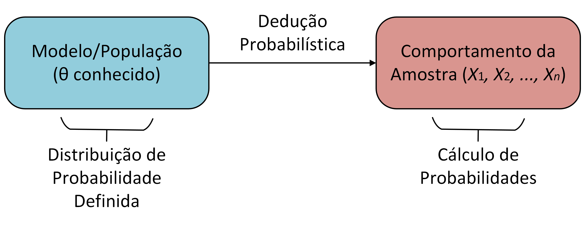
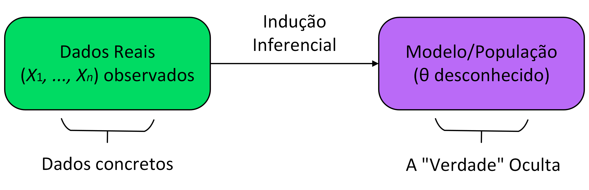

O Problema Fundamental da Inferência Estatística
Elementos Básicos: Amostras, Parâmetros, Estatísticas e Estimadores
Uma Abordagem Formal e Aplicada para a Ciência de Dados e Atuária
ESTAT0078 – Inferência I
Prof. Dr. Sadraque E. F. Lucena
http://sadraquelucena.github.io/inferencia1
Da Probabilidade à Inferência Estatística
O Paradigma da Probabilidade
- Nos estudos de Probabilidade, a distribuição probabilística da população é completamente conhecida.
- A função de probabilidade ou de densidade \(f(x \mid \theta)\) é especificada.
- O parâmetro \(\theta\) da distribuição é conhecido.
- A única fonte de aleatoriedade é a amostra futura.

- Objetivo: determinar probabilidades associadas ao comportamento de uma amostra aleatória.
O Paradigma da Probabilidade
Exemplo: Ocorrência de Sinistros
Assume-se que o número anual de sinistros de uma apólice segue uma distribuição de Poisson com média λ = 0,25 sinistros por ano, \(X\sim \text{Poisson}(\lambda=0{,}25)\).
A partir desse modelo, é possível calcular:
- a probabilidade de uma apólice não registrar sinistros: \(P(X=0)\);
- a probabilidade de ocorrer pelo menos um sinistro: \(P(X\geq 1)\);
- a probabilidade de uma carteira com milhares de apólices registrar mais de determinado número de sinistros.
Em todos esses casos, a distribuição de probabilidade é conhecida e o objetivo é prever o comportamento de perdas futuras.
O Paradigma da Probabilidade
Exemplo: Predição de Internações
- Uma equipe resolve prever o tempo de permanência hospitalar de pacientes internados por complicações do diabetes usando a distribuição Lognormal, \(T \sim \text{Lognormal}(\mu,\sigma^2)\).
- Esse modelo permite determinar:
- a probabilidade de uma internação durar mais de 15 dias;
- o tempo médio esperado de ocupação dos leitos;
- a proporção de pacientes com internações prolongadas;
- a capacidade hospitalar necessária para atender à demanda prevista.
- Como a distribuição de probabilidade é completamente conhecida, é possível prever a utilização futura dos recursos hospitalares.
O Paradigma da Probabilidade
- Nos dois exemplos o problema possui a mesma estrutura lógica:

- Essa forma de raciocínio caracteriza o Paradigma da Probabilidade.
O Problema da Inferência
Desconhecimento do Parâmetro
- A distribuição \(f(x \mid \theta)\) rege o fenômeno aleatório.
- O parâmetro \(\theta \in \Theta\) é desconhecido e inobservável.
- Atuária: Taxa de sinistros \(\lambda > 0\) é desconhecida.
- Eleições: Proporção de votos \(p \in (0,1)\) é desconhecida.
- Na abordagem frequentista, \(\theta\) é constante e fixo.
O Ponto de Partida
Dados e a Questão Central
- Dispomos apenas do vetor de dados observados \(x = (x_1, \dots, x_n)'\).
- \(x\) representa a realização concreta da amostra \(X\).
- Objetivo: Induzir o valor plausível do parâmetro \(\theta\).
- Como escolher valores plausíveis no espaço paramétrico \(\Theta\)?
- Como garantir sustentabilidade matemática para essa indução?
Paradigma Probabilístico
Dedução a Partir do Modelo
- Premissa: Modelo \(f(x \mid \theta)\) e parâmetro \(\theta\) são conhecidos.
- Objetivo: Calcular probabilidades da amostra teórica \(X\).
- Raciocínio: Do Geral (População) para o Particular (Amostra).
\[\text{Modelo } f(x \mid \theta) \xrightarrow{\quad\text{Dedução}\quad} \text{Amostra } X\]
Paradigma Inferencial
Indução a Partir dos Dados
- Premissa: Estrutura \(f(x \mid \theta)\) é conhecida, mas \(\theta\) é desconhecido.
- Objetivo: Estimar \(\theta\) ou testar hipóteses com dados \(x\).
- Raciocínio: Do Particular (Amostra) para o Geral (População).
\[\text{Dados } x \xrightarrow{\quad\text{Indução}\quad} \text{Parâmetro } \theta \in \Theta\]
Paradigma Probabilístico: Dedução a partir do Modelo
Premissa Fundamental (Modelo Especificado):A função de probabilidade ou de densidade \(f(x\vert{}\theta)\) da população e o parâmetro \(\theta \in \Theta\) são tidos como completamente conhecidos ex-ante.Objetivo Analítico:Deducir o comportamento probabilístico de variáveis aleatórias antes da amostragem, calculando probabilidades associadas a eventos da amostra teórica \(X = (X_1, \dots, X_n)'\).Vetor de Raciocínio (Dedução):Estruturação do pensamento do Geral para o Particular:
Enquanto estudávamos Probabilidade, o fluxo de pensamento assume um modelo (distribuição) completamente conhecido:
- Partida: O modelo e o parâmetro \(\theta\) são conhecidos.
- Objetivo: Prever a probabilidade de comportamentos da amostra futura.
- Raciocínio: Do Geral (População) para o Particular (Amostra).

Paradigma Inferencial: Indução a partir dos Dados
Premissa Fundamental (Incerteza Paramétrica):Apenas a estrutura da família de distribuições \(f(x\vert{}\theta)\) é conhecida, enquanto o parâmetro \(\theta\) permanece desconhecido e inobservável.Objetivo Analítico:Utilizar a realização concreta da amostra \(x = (x_1, \dots, x_n)'\) para especificar um valor, um conjunto de valores plausíveis ou testar hipóteses sobre \(\theta\).Vetor de Raciocínio (Indução):Inversão do fluxo de conhecimento, caminhando do Particular para o Geral:
A partir de hoje (Inferência Estatística), invertemos radicalmente o conhecimento:
- Partida: Apenas os dados observados \(\mathbf{x} = (x_1, \dots, x_n)\) são visíveis.
- Objetivo: Desvendar o parâmetro oculto \(\theta\) da caixa-preta da Natureza.
- Raciocínio: Do Particular (Amostra) para o Geral (População).

Inferência
- Na prática acadêmica e aplicada, a verdadeira distribuição de probabilidade \(f(x\vert{}\theta)\) que rege um fenômeno aleatório é caracterizada por um vetor de parâmetros \(\theta \in \Theta\) desconhecido. Exemplos:
- A proporção populacional \(p \in (0,1)\) de eleitores favoráveis a determinada candidata;
- A taxa populacional \(\lambda > 0\) de ocorrência de sinistros por ano.
- O parâmetro \(\theta\) é assumido como uma quantidade constante e determinística, porém inobservável (latente).
- O pesquisador dispõe exclusivamente do vetor de observações \(x = (x_1, x_2, \dots, x_n)'\), que representa a realização concreta (valores observados) da amostra aleatória \(X = (X_1, X_2, \dots, X_n)'\).
Questão Central da Inferência: Dado o vetor de dados observados \(x\), qual o procedimento matematicamente sustentável para induzir o comportamento de \(\theta\), e quais são os valores do espaço paramétrico \(\Theta\) mais plausíveis sob o modelo probabilístico \(f(x\vert{}\theta)\)?
Aplicação 1: Precificação de Risco Atuarial
📊 O Problema da Seguradora
Um atuário precisa fixar o prêmio puro (valor cobrado) de uma apólice de seguros de veículos para o próximo ano. O custo depende da taxa média populacional de acidentes (\(\lambda\)).
- O Dilema: É impossível esperar que todas as apólices do ano terminem para só então precificar a apólice no presente.
- Incerteza Perturbadora: Acidentes futuros são variáveis aleatórias. A população de motoristas muda continuamente.
- A Solução: Utilizar uma amostra de contratos passados \(\mathbf{x} = (x_1, \dots, x_n)\) para induzir a verdadeira taxa populacional \(\lambda\).
Aplicação 2: O Conflito da Variabilidade Amostral
Dois institutos de pesquisa contratados no mesmo dia entrevistam amostras independentes de \(n = 2.000\) eleitores para estimar a proporção real de votos (\(p\)) do Candidato A:
🏛️ Instituto Alfa
- Favoráveis: \(1.040\)
- Estimativa: \(\hat{p}_A = 0{,}52\) (\(52\%\))
- Notícia: “Candidato A vence no 1º turno!”
🏛️ Instituto Beta
- Favoráveis: \(960\)
- Estimativa: \(\hat{p}_B = 0{,}48\) (\(48\%\))
- Notícia: “Eleição caminha para o 2º turno!”
- Algum instituto errou? Não. A variação é fruto da Variabilidade Amostral.
- A verdadeira proporção \(p\) permanece desconhecida.
- Desafio: Como tomar decisões confiáveis quando a amostra oscila a cada coleta?
Parte II: Tipos de Problemas Inferenciais
A Definição do Problema Inferencial
Conforme formalizado por Bolfarine & Sandoval[cite: 3]:
Definição 1.2.1 (Inferência Estatística)
Seja \(X\) uma variável aleatória com função de densidade (f.d.p.) ou função de probabilidade (f.p.) denotada por \(f(x|\theta)\), em que \(\theta\) é um parâmetro desconhecido[cite: 3].
Chamamos de Inferência Estatística o problema que consiste em especificar um ou mais valores para \(\theta\), baseado em um conjunto de valores observados de \(X\)[cite: 3].
Pressuposto Fundamental: Assumimos que a distribuição de \(X\) pertence a uma família conhecida de distribuições (família paramétrica), indexada e especificada pelo parâmetro \(\theta\)[cite: 3].
Divisão Clássica dos Problemas Inferenciais
Diante do parâmetro desconhecido \(\theta\), a disciplina divide-se em duas grandes abordagens[cite: 3]:
1. Problemas de Estimação
O objetivo é procurar valores numéricos ou faixas numéricas que representem adequadamente o parâmetro desconhecido \(\theta\)[cite: 3]. - Estimação Pontual: Um único valor \(\hat{\theta}\). - Estimação Intervalar: Um intervalo \((\hat{\theta}_{inf}, \hat{\theta}_{sup})\) com nível de confiança associado.
2. Testes de Hipóteses
O objetivo é verificar a validade de afirmações sobre o parâmetro \(\theta\)[cite: 3]. - Exemplo 1 (Eleitoral): \(H_0: p \le 0{,}50 \quad \text{vs} \quad H_1: p > 0{,}50\)[cite: 3] - Exemplo 2 (Controle de Qualidade): Verificar se o peso médio \(\mu\) de um pacote é \(1\text{ kg}\): \[H_0: \mu = 1 \quad \text{vs} \quad H_1: \mu \neq 1\][cite: 3]
Parte III: Formalização dos Elementos Básicos
População e Amostra Aleatória
Definição 1.3.1 (População)
O conjunto de valores de uma característica (observável) associada a uma coleção de indivíduos ou objetos de interesse é dito ser uma população[cite: 3].
Definição 1.3.2 (Amostra Aleatória)
Uma sequência \(X_1, X_2, \dots, X_n\) de \(n\) variáveis aleatórias independentes e identicamente distribuídas (i.i.d.), cada uma com f.d.p. ou f.p. \(f(x|\theta)\), é dita ser uma Amostra Aleatória (a.a.) de tamanho \(n\) da distribuição de \(X\)[cite: 3].
Devido à independência e à mesma distribuição, a f.d.p. (ou f.p.) conjunta da amostra aleatória é dada pelo produto das marginais[cite: 3]: \[f(x_1, \dots, x_n | \theta) = \prod_{i=1}^{n} f(x_i | \theta) = f(x_1|\theta) \cdots f(x_n|\theta)\][cite: 3]
A Função de Verossimilhança
A f.d.p. conjunta dada pela Equação (1.3.1) do Bolfarine & Sandoval assume um papel de protagonismo quando invertemos a interpretação dos dados[cite: 3]:
Função de Verossimilhança (Likelihood)
A função de densidade (ou probabilidade) conjunta avaliada no vetor de observações fixas \(\mathbf{x} = (x_1, \dots, x_n)'\) e reinterpretada como uma função do parâmetro \(\theta\) é denominada Função de Verossimilhança de \(\theta\)[cite: 3]:
\[L(\theta; \mathbf{x}) = \prod_{i=1}^{n} f(x_i | \theta)\][cite: 3]
- Interpretação: \(L(\theta; \mathbf{x})\) mede o quão “plausível” ou “provável” é cada valor de \(\theta\) ter gerado exatamente a amostra observada \(\mathbf{x}\)[cite: 3].
- Será a ferramenta central para a construção de estimadores pelo Método de Máxima Verossimilhança (MMV).
O Conceito de Estatística
Definição 1.3.3 (Estatística)
Qualquer função da amostra que não depende de parâmetros desconhecidos é denominada uma estatística[cite: 3].
Dada a amostra aleatória \(\mathbf{X} = (X_1, \dots, X_n)\), uma estatística é uma função \(T(\mathbf{X}) = T(X_1, \dots, X_n)\) cuja regra de cálculo depende apenas das variáveis aleatórias da amostra e de constantes conhecidas[cite: 3].
⚠️ Atenção!
Se a expressão da função incluir o parâmetro desconhecido \(\theta\), ela NÃO é uma estatística! - Exemplo: \(T(\mathbf{X}) = \bar{X} - \mu\) não é estatística se \(\mu\) for um parâmetro populacional desconhecido.
Exemplos de Estatísticas Importantes
Exemplo 1.3.1 (Bolfarine & Sandoval)
Sejam \(X_1, \dots, X_n\) uma amostra aleatória da variável \(X\) com f.d.p. ou f.p. \(f(x|\theta)\)[cite: 3]. São exemplos clássicos de estatísticas:
- Mínimo amostral: \(X_{(1)} = \min(X_1, \dots, X_n)\)[cite: 3]
- Máximo amostral: \(X_{(n)} = \max(X_1, \dots, X_n)\)[cite: 3]
- Mediana amostral: \(\tilde{X} = \text{med}(X_1, \dots, X_n)\)[cite: 3]
- Média amostral: \(\bar{X} = \frac{1}{n} \sum_{i=1}^n X_i\)[cite: 3]
- Variância amostral (com divisor \(n\)): \(\hat{\sigma}^2 = \frac{1}{n} \sum_{i=1}^n (X_i - \bar{X})^2\)[cite: 3]
Como \(X_1, \dots, X_n\) são variáveis aleatórias, toda estatística \(T(\mathbf{X})\) também é uma variável aleatória e possui uma distribuição de probabilidade (chamada de Distribuição Amostral).
Espaço Paramétrico
Definição 1.3.4 (Espaço Paramétrico)
O conjunto em que o parâmetro \(\theta\) toma valores é denominado espaço paramétrico, denotado por \(\Theta\)[cite: 3].
Exemplo 1.3.2 (Bolfarine & Sandoval)
Sejam \(X_1, \dots, X_n\) uma a.a. da variável aleatória \(X \sim N(\mu, \sigma^2)\)[cite: 3]:
- (i) Se \(\sigma^2 = 1\) é conhecido, o parâmetro desconhecido é \(\theta = \mu\) e: \[\Theta = \{\mu : -\infty < \mu < \infty\} = \mathbb{R}\][cite: 3]
- (ii) Se \(\mu = 0\) é conhecido, o parâmetro desconhecido é \(\theta = \sigma^2\) e: \[\Theta = \{\sigma^2 : \sigma^2 > 0\} = \mathbb{R}^+\][cite: 3]
- (iii) Se \(\mu\) e \(\sigma^2\) são ambos desconhecidos, o vetor paramétrico é \(\theta = (\mu, \sigma^2)\) e: \[\Theta = \{(\mu, \sigma^2) : -\infty < \mu < \infty, \, \sigma^2 > 0\} = \mathbb{R} \times \mathbb{R}^+\][cite: 3]
Estimadores e a Função Paramétrica \(g(\theta)\)
Definição 1.3.5 (Estimador de \(\theta\))
Qualquer estatística que assuma valores no espaço paramétrico \(\Theta\) é um estimador para o parâmetro \(\theta\)[cite: 3].
Estimação de Funções do Parâmetro \(g(\theta)\)
Em muitas situações práticas, o nosso interesse não é estimar diretamente \(\theta\), mas sim uma função \(g(\theta)\)[cite: 3]. - Exemplo: Na Normal \(N(\mu, \sigma^2)\) com parâmetros \(\theta = (\mu, \sigma^2)\), podemos desejar estimar apenas \(g(\theta) = \mu\), tratando \(\sigma^2\) como um parâmetro de perturbação (ou ruído)[cite: 3].
. . .
Definição 1.3.6 (Estimador de \(g(\theta)\))
Qualquer estatística que assuma valores somente no conjunto dos possíveis valores de \(g(\theta)\) é um estimador para \(g(\theta)\)[cite: 3].
Síntese Notacional: A Tríade da Inferência
Para encerrar a parte conceitual, vamos consolidar a transposição dos três mundos em uma única tabela:
| Conceito | No Mundo Real (Aplicações) | Na Teoria da Inferência | Notação Matemática |
|---|---|---|---|
| Alvo Desconhecido | Taxa real de sinistros / Proporção de votos | Parâmetro ou \(g(\theta)\) | \(\theta \in \Theta\)[cite: 3] |
| Coleta Teórica | Mecanismo de amostragem de \(n\) elementos | Amostra Aleatória | \(\mathbf{X} = (X_1, \dots, X_n)\)[cite: 3] |
| Regra / Função | Fórmula aplicada à amostra abstrata | Estimador | \(T(\mathbf{X})\) (V.A.)[cite: 3] |
| Dado Concreto | O valor final calculado na planilha de dados | Estimativa | \(t(\mathbf{x}) \in \mathbb{R}\)[cite: 3] |
Parte IV: O Roteiro do Semestre (Para Onde Vamos?)
As Grandes Perguntas que Responderemos
Nesta disciplina, atacaremos três grandes problemas matemáticos em sequência[cite: 3]:
- Métodos de Construção (Como propor um Estimador?):
- Dada a amostragem \(X \sim f(x|\theta)\), como derivar analiticamente a função \(T(\mathbf{X})\)?
- Métodos dos Momentos, Máxima Verossimilhança e Abordagem Bayesiana.
- Avaliação e Propriedades (Como saber se um Estimador é bom?):
- Em média ele acerta o alvo? \(\implies E[\hat{\theta}] = \theta\) (Não viciado)[cite: 3].
- Qual o erro quadrático médio? \(\implies EQM[\hat{\theta}] = Var[\hat{\theta}] + B^2(\hat{\theta})\)[cite: 3].
- Quando \(n \to \infty\), o erro vai a zero? \(\implies\) (Consistência)[cite: 3].
- Estrutura Teórica Otimal (Qual o melhor estimador possível?):
- Suficiência, Família Exponencial, Informação de Fisher e o Limite de Cramér-Rao.
Provocação para a Próxima Aula
*“Calcular a média de um conjunto de dados é aritmética básica.
A Inferência Estatística nos permite provar se essa média é o melhor estimador possível para a população e mensurar a probabilidade exata de estarmos errados.”*
📚 Leitura Recomendada para Quinta-feira
Estudar a Seção 1.3 do Bolfarine & Sandoval[cite: 3] (foco na Definição 1.3.7: Erro Quadrático Médio e Viés[cite: 3]).
Dúvidas?
Obrigado pela atenção e até a próxima aula!